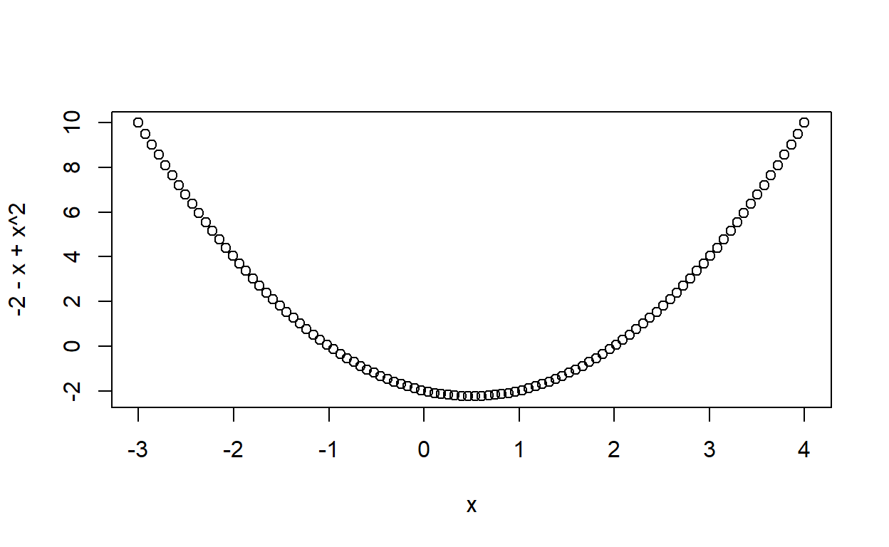
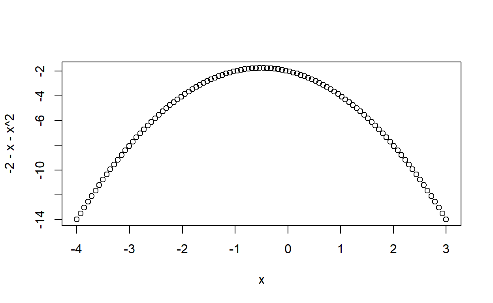

Week 7: Multiple linear regression
ANTH 674: Research Design and Analysis in Anthropology
Professor Andrew Du
Introduction
This week, we learned all about multiple linear regression. Multiple linear regression (hereafter, “multiple regression”) is a straightforward extension of simple linear regression, where the former has two or more independent variables, while the latter has only one. Therefore, virtually everything you learned for simple linear regression applies here. In fact, I don’t even make a distinction between the two in my head: they’re the same model and all that differs is the number of independent variables.

The dependent variable in multiple regression is typically continuous, whereas the independent variables can be continuous or categorical. For this week, however, we will go over continuous independent variables only (categorical independent variables are the topic of next week’s lecture).
This tutorial will cover many of the neat things we can do with multiple regression, and why it is many times better to compare the slopes (i.e., coefficients) of independent variables within the same multiple regression model, as opposed to multiple simple linear models (provided that the multiple regression model assumptions are not grossly violated).
Goals for this tutorial
1) Continue the never-ending journey of familiarizing yourself with R.
2) Learn how to interpret the coefficients in multiple regression.
3) Learn what happens when you add more independent variables to your model.
4) Learn what interaction terms are and how they’re interpreted.
5) Quickly learn about diagnosing your multiple regression model using plots.
6) Learn how collinearity influences multiple regression results.
7) Learn what variance partitioning is and how to do it.
Multiple regression coefficients
As I taught in lecture, multiple regression coefficients are estimated in the same exact way as in simple linear regression: ordinary least squares, where residuals are minimized. The fitted plane must pass through the mean of the DV and all IVs. Thus, one can think of fitting the plane to data by rotating the plane around a fixed swivel point (i.e., the mean of DV and IVs), until the residuals are minimized. For a multiple regression model with two IVs, this can be visualized in three dimensions, where the two IVs and DV are plotted on a scatter plot with three axes, and the plane is a two-dimensional surface.

With more than two IVs, we would need more than three dimensions, which humans cannot visualize, so just think of the same process happening in some abstract higher-dimensional space.
Interpreting coefficients
This is the formula for a multiple regression model:
\[\begin{align} Y = \beta_0 + \beta_1 X_1 + \beta_2 X_2 + \beta_3 X_3 + \ldots + \beta_n X_n + \epsilon, \end{align}\]
where \(Y\) is the DV, \(X_{1..n}\) are the different IVs, \(\beta_0\) is the intercept, \(\beta_{1...n}\) are the slope estimates (i.e., coefficients) for each IV, and \(\epsilon\) is the error term or residual.
The intercept is interpreted in the same exact way as in simple linear regression: the DV value when all IVs are set to zero. Each estimated slope is interpreted as the change in DV when the IV in question increases by one, when all other IVs are held constant. One can see why this would be of interest: we often want to isolate and understand the effect of a single IV on the DV. In fact, researchers will often include an IV that they’re not interested in just so they can remove its effect when interpreting other multiple regression coefficients (these “uninteresting” IVs are called covariates).
Let’s fit a multiple regression to some data from mtcars
and understand how the coefficients are interpreted.
We will start with two IVs only, but everything you will learn can
easily be extended to more. In R, the IVs within a multiple regression
model are to the right of ~ and are separated by
+. Fit the model
lm(qsec ~ hp + drat, data = mtcars) below, and save it to
an object.
# Click "Solution" button if stucklm.res <- lm(qsec ~ hp + drat, data = mtcars)
predict(lm.res, data.frame(hp = 0, drat = 0))
diff(predict(lm.res, data.frame(hp = c(10, 10), drat = 1:2)))Let’s first use the predict() function to get the
expected DV when hp and drat are set to zero
(click the “Solution” button if you don’t remember how to do this). As
you’ll see, the predicted DV value is the estimated intercept.
Now let’s sharpen our intuition about interpreting multiple
regression coefficients by increasing drat from 1 to 2,
while fixing hp at some value (pick whichever value you’d
like!). Use the predict() function again and see if the
change in DV is exactly the coefficient estimate for drat
(you can wrap diff() around your code to get the difference
in values). Try other values for hp and see if you get the
same answer.
Interpreting coefficients as partialing out other IVs
Another very similar way to think about, for example, the
drat coefficient is by removing or
partialing out the effect of hp (this is
why multiple regression coefficients are often called partial
regression coefficients). Recall that the residuals from
lm(y ~ x) are interpreted as the signal in y
after the effect of x has been removed. Thus, to partial
out the effect of hp from both qsec and
drat, we fit linear models of each as a function of
hp and then take the residuals. Do this below, and then
regress the residuals from qsec ~ hp as a function of the
residuals from drat ~ hp. The resulting slope should be
exactly the coefficient for drat in the multiple regression
model (i.e., lm(qsec ~ hp + drat, data = mtcars)).
# Click "Solution" button if stucke_qsec.hp <- lm(qsec ~ hp, data = mtcars)$residuals
e_drat.hp <- lm(drat ~ hp, data = mtcars)$residuals
lm(e_qsec.hp ~ e_drat.hp)Adding more IVs to your model
One might think that adding more IVs to your multiple regression model is a good thing, since you can account for more IVs when studying your IV(s) of interest, and the \(R^2\) also increases. However, there is no “free lunch” in statistics and benefits are usually accrued at a cost elsewhere. Here, we will see how this happens in action.
Increasing \(R^2\)
\(R^2\) can only increase or stay the same as you add more IVs to your model. This is because another IV can only explain more of the residual variation (\(R^2\) increases) or it does not help at all (\(R^2\) stays the same). \(R^2\) will never decrease if you add more IVs.
Let’s see how this works by comparing the \(R^2\) of lm(qsec ~ hp + drat)
to that of lm(qsec ~ hp + drat + wt).
# Click "Solution" if stucksummary(lm(qsec ~ hp + drat, data = mtcars))$r.squared
summary(lm(qsec ~ hp + drat + wt, data = mtcars))$r.squared
summary(lm(qsec ~ hp + drat + wt + mpg, data = mtcars))$r.squared
summary(lm(qsec ~ hp + drat, data = mtcars))$adj.r.squared
summary(lm(qsec ~ hp + drat + mpg, data = mtcars))$adj.r.squared\(R^2\) increased by about ~0.1.
It’ll increase again if you add mpg (try this out
above).
At some point, however, your model will overfit the data. That is, it’ll start fitting the noise in your dataset (bad), as opposed to the signal (good).

This is especially true as your ratio of data points to parameters decreases (general rule is that you should have at least 20 data points per parameter). Overfitting is bad since you’re not focusing on the signal and pattern of interest anymore (i.e., how your DV changes with some IV) and instead you’re starting to fit the noise structure (i.e., factors aside from the IVs that influence the DV). Overfitting is extremely bad when you want to predict DVs for a new dataset, since the noise structure in the new dataset will not match what is in your original data.
Overfitting aside, the more IVs in one’s model, the higher the \(R^2\), all else being equal. Thus, comparing \(R^2\) between models with different numbers of IVs is an apples-to-oranges comparison (assuming both models have the same number of data points). The adjusted \(R^2\) corrects the \(R^2\) to account for additional parameters. Its formula is:
\[\begin{align} R_a^2 = 1 - \frac{n - 1}{n - p - 1}(1 - R^2), \end{align}\]
where \(n\) is the number of data points, \(p\) is the number of independent variables, and \(R^2\) is the original coefficient of determination. As you can see from the formula, as \(p\) goes up, \(R_a^2\) goes down.
Compare the adjusted \(R^2\) between
lm(qsec ~ hp + drat) and
lm(qsec ~ hp + drat + mpg) (the adjusted \(R^2\) can be called with
summary(lm())$adj.r.squared).
Increasing standard error
Increasing your number of IVs will also increase the standard error of your coefficient estimates. I like to think of it as if you increase the number of IVs, keeping the number of data points the same, you have less information and statistical power to devote to each coefficient (recall from an earlier lecture that larger sample sizes decrease standard errors). Larger standard errors mean larger P-values and less precise predicted DVs.
Compare the standard errors for hp and drat
in lm(qsec ~ hp + drat)
vs. lm(qsec ~ hp + drat + wt + mpg).
# Click "Solution" if stucksummary(lm(qsec ~ hp + drat, data = mtcars))
summary(lm(qsec ~ hp + drat + wt + mpg, data=mtcars))The somewhat paradoxical result is that a more precise prediction might result if you don’t include all IVs that actually affect the DV in reality. This trade-off is known as the bias-variance trade-off: with more IVs, your prediction will become less biased (they will be closer to the true value on average), but they will become less precise. The goal is to find the “Goldilocks” middle-ground, where you have some bias and imprecision but both are minimized together. This is a big issue in machine learning.

Interaction terms
Interaction terms are needed when the slope of a DV against an IV changes as a function of another IV. The example I used in class is that of a marathon runner whose time decreases as they train more. This relationship is most likely affected by the quality of equipment they use: with better equipment, one might expect the slope to decrease, such that marathon time decreases even more with training time.

In this example, an interaction is needed between training time and equipment quality.
So in brief, an interaction term indicates that the slope between \(Y\) and \(X_1\), for example, changes as a function of \(X_2\). And because interaction terms are symmetrical, this also implies that the slope between \(Y\) and \(X_2\) changes as a function of \(X_1\). The multiple regression formula, including an interaction term, is:
\[\begin{align} Y = \beta_0 + \beta_1 X_1 + \beta_2 X_2 + \beta_3 (X_1 \times X_2) + \epsilon. \end{align}\]
In R, one fits an interaction model with
lm(y ~ x1 * x2); the * implies \(\beta_1\) and \(\beta_2\) (from the formula) are estimated
too. If you just want to fit the interaction term and estimate \(\beta_3\) only, you use :
instead of *, though this is rarely done.
A positive interaction term means that the slope of \(Y\) as a function of \(X_1\) increases as \(X_2\) increases (and the slope of \(Y\) as a function of \(X_2\) increases with \(X_1\)). A negative interaction term means that the slope of \(Y\) as a function of \(X_1\) decreases as \(X_2\) increases (and the slope of \(Y\) as a function of \(X_2\) decreases with \(X_1\)).
We can see how this works, using the multiple regression formula
itself. I have simulated a DV (y) and two IVs that interact
(x1 and x2); all variables are found in the
dataframe, DF, which is preloaded into your console. Fit a
multiple regression model with an interaction term between
x1 and x2, and save the results to an object.
I have also created a function for you in the console
(slope_x1()) to get out the slope of y ~ x1
for a given value of x2; the two arguments are the fitted
interaction model and a vector of values for x2. So, use
slope_x1() to get a vector of expected y ~ x1
slopes for the interaction model and a vector of x2 values.
Plot the slopes against x2, and fit a linear model to get
the slope of this relationship.
# Click "Solution" if stuckset.seed(100)
x1 <- runif(80, max = 10)
set.seed(101)
x2 <- runif(80, max = 10)
set.seed(100)
y <- 2 + 1.5 * x1 + 1.2 * x2 + 2 * x1 * x2 + rnorm(80)
DF <- data.frame(y, x1, x2)
slope_x1 <- function(lm.res, x2){
return(lm.res$coefficients["x1"] + x2 * lm.res$coefficients["x1:x2"])
}lm.res <- lm(y ~ x1 * x2, data = DF)
x2 <- 1:10
slopes <- slope_x1(lm.res, x2)
plot(x2, slopes)
lm.res1 <- lm(slopes ~ x2)
abline(lm.res1)As you can see, the estimated slope (slopes ~ x2) is the
interaction term itself! So you can now interpret an interaction term,
which is the exact amount the slope of y ~ x1 changes as
x2 increases by one. Interactions are symmetrical, so the
interaction term is also the amount the slope of y ~ x2
changes as x1 increases by one.
Quadratic regression
An IV can interact with itself, and this is known as a quadratic function:
\[\begin{align} Y = \beta_0 + \beta_1 X + \beta_2 X^2 + \epsilon. \end{align}\]
If the quadratic term is positive, then the slope of \(Y\) as a function of \(X\) increases as \(X\) increases. This can either produce an accelerating curve or a horseshoe-shaped curve (see below), where a negative slope decreases until it hits zero and then becomes positive with increasing magnitude.

If the quadratic term is negative, then the slope of \(Y\) as a function of \(X\) decreases as \(X\) increases, producing either a decelerating curve or an upside-down horseshoe (see below).

Below I have simulated a quadratic relationship between
x and y (i.e., \(Y =
X + 5X^2 + \epsilon\)). Create a scatter plot to see what the
relationship looks like.
# Click "Solution" if stuckset.seed(100)
x <- runif(60, max = 10)
set.seed(101)
y <- x + 5 * x ^ 2 + rnorm(60, sd = 20)plot(x, y)
lm.quad <- lm(y ~ x + I(x ^ 2))
curve(predict(lm.quad, data.frame(x = x)), add = TRUE)To fit a quadratic linear model, you need one extra function within
lm(): I(). For example, to fit a quadratic
model to y and x, you need to enter
lm(y ~ x + I(x ^ 2)). The I() tells R that
^ should be treated “as is”, i.e., a raised-to-the-power
operator in the formula. See what happens when you fit a linear model
without I() (compare it to lm(y ~ x)).
Go ahead and fit the quadratic model. To add the regression line to
the scatter plot, we cannot use abline() anymore, which
only works for models with straight lines (i.e., simple linear
regression). We now have to use the curve() and
predict() functions, so calling the fitted quadratic model
lm.quad, the proper code is
curve(predict(lm.quad, data.frame(x = x)), add = TRUE). Use
this code to add the fitted quadratic model to the scatter plot.
Assumptions and diagnostics
Assumptions
The assumptions of multiple regression are the same as that of simple linear regression, except there is one extra.
- The relationship between the DV and IVs is linear.
- The IVs are measured without error.
- Error terms are normally distributed with a mean of zero.
- Error terms are drawn from a population with constant variance.
- Error terms are independent.
- IVs are not collinear.*
The sixth assumption is unique to multiple regression and therefore will get its own topic section.
Diagnostics
Assumption violations are diagnosed using plots (e.g., residual plots), just like in simple linear regression.
Let’s see this in action by simulating a DV with two IVs that interact in reality. I have included the code for you in the console below.
set.seed(100)
x1 <- runif(80, max = 10)
set.seed(101)
x2 <- runif(80, max = 10)
set.seed(100)
y <- 5 + x1 + 1.5 * x2 + 2 * x1 * x2 + rnorm(80)lm.res <- lm(y ~ x1 + x2)
plot(lm.res)
lm.res1 <- lm(y ~ x1 * x2)
plot(lm.res1)
lm.res1Create a multiple regression with NO interaction term to start off
with (i.e., lm(y ~ x1 + x2)). We know this model is not
specified correctly, so we’ll see what this looks like in the diagnostic
plots. Now plot the diagnostic plots using the lm object
just as you would with a simple linear model.
Note that the residual plot shows a horseshoe shape, indicating that the relationship between the DV and IVs is not linear.
Now include the interaction term and create the diagnostic plots. The residuals look a lot better now, demonstrating that the model is specified correctly and no assumptions are violated.
You can even see what the estimated coefficients are and how well
they match what we simulated: intercept = 5, x1 coefficient
= 1, x2 coefficient = 1.5, and interaction term = 2.
Exercise 1
Let’s stick with the mtcars dataset.
Fit a multiple regression model, where
mpgis the DV andhpandwtare two IVs. How would you interpret each coefficient (i.e., the intercept and each coefficient forhpandwt)? What are the P-values for each coefficient?Look at the diagnostic plots for this model. Do the residuals indicate that the model is well-specified (i.e., no assumptions are violated)?
Try including an interaction term between
hpandwt. Is the interaction term significant? How would you interpret the interaction term?Create the diagnostic plots for your interaction model. Have the residuals improved?
# Click "Solution" button when done# Q1
lm.res <- lm(mpg ~ hp + wt, data = mtcars)
# intercept is the value of DV when IVs equal zero
# other coefficients are change in DV as target IV increases by one with the other IV held constant.
# all coefficients are significant (P < 0.05)
# Q2
plot(lm.res)
# Residual plot shows some non-linearity
# Q3
lm.interact <- lm(mpg ~ hp * wt, data = mtcars)
# interaction term is significant
# interaction term is the change in slope of DV against an IV as the other IV increases by one
# Q4
plot(lm.interact)
# non-linearity issue goes away. Combined with the significance of the interaction term, this shows we need to include the interaction termCollinearity
Collinearity, also known as multicollinearity, occurs when two or more IVs are strongly correlated in a multiple regression model. This is a violation of one of the assumptions of multiple regression, and it results in coefficient estimates that are unstable (the “bouncing betas” problem; coefficients are informally called “betas”). What do I mean by “unstable”? This is best illustrated through example.
Let’s look at the multiple regression model,
lm(qsec ~ hp + wt, data = mtcars). To see how these
variables are related to each other, create a scatter plot matrix (it
might help to first subset out these three variables from the
mtcars dataframe). Feel free to add lowess curves,
correlation coefficients, or any other scatter plot matrix modification
you learned in last week’s tutorial.
# Click "Solution" if stuckmtcars1 <- subset(
mtcars,
select = c(
"qsec",
"hp",
"wt"
))
panel.cor <- function(x, y, digits = 2, prefix = "", cex.cor, ...)
{
par(usr = c(0, 1, 0, 1))
r <- abs(cor(x, y))
txt <- format(c(r, 0.123456789), digits = digits)[1]
txt <- paste0(prefix, txt)
if(missing(cex.cor)) cex.cor <- 0.8/strwidth(txt)
text(0.5, 0.5, txt, cex = cex.cor * r)
}
pairs(mtcars1, lower.panel = panel.smooth, upper.panel = panel.cor)
lm.res <- lm(qsec ~ hp + wt, data = mtcars)
lm.hp <- lm(qsec ~ hp, data = mtcars)
lm.wt <- lm(qsec ~ wt, data = mtcars)You can see that qsec is strongly correlated with
hp, but not so much with wt, and
hp and wt are strongly correlated.
Estimate the coefficients for the multiple linear regression model, and look at the P-values as well.
Now estimate the coefficients for hp and wt
separately in two simple linear regression models (i.e.,
lm(qsec ~ hp) and lm(qsec ~ wt)). Compare the
coefficients and P-values for each IV between the multiple regression
and simple regression models.
You can see that the hp coefficient did not change too
much between the models, but the P-value changed by two orders of
magnitude. More striking is that the wt coefficient changed
from positive to negative and significant to not significant when going
from multiple to simple regression. Such a drastic change in coefficient
values and significance is prime evidence for collinearity, i.e.,
coefficients will change quite a bit when a collinear IV is added to or
dropped from the model. We know based on intuition that a larger
wt should result in a slower car (qsec) on
average, so the positive coefficient in the multiple regression is
suspect and indicates collinearity. This is borne out by the high
correlation coefficient between hp and wt.
Thus, the wt coefficient in the multiple regression
model is unreliable. Recall that a coefficient in multiple regression is
defined as the change in DV as IV increases by one, holding all other
IVs constant. If the target IV is strongly correlated with another IV,
then it is not possible to look at how the DV changes as a function of
the target IV while holding the other IV constant. The more collinear
your IVs are, the more your coefficients and P-values will change if a
collinear IV is added or dropped. If your IVs are 100% uncorrelated,
then the multiple regression coefficients will be identical to their
counterparts in simple linear regression.
Solutions to collinearity include dropping one of the collinear IVs, since they offer redundant information anyway. The variables could also be combined using principal components analysis (which you’ll learn about in a future lecture). Or nothing can be done, since collinearity does not affect predictions nor \(R^2\) values. So, how to address collinearity depends on your research question!
Detecting collinearity
This can be done using correlation coefficients and scatter plot matrices (as in the previous topic). Another useful metric is the variance inflation factor, which is defined as:
\[\begin{align} VIF_j = \frac{1}{1 - R_j^2}, \end{align}\]
where \(R_j^2\) is the \(R^2\) calculated from a regression model regressing \(X_j\) on all other IVs. While correlation coefficients only tell us about collinearity when comparing two IVs at a time, VIFs can tell us if collinearity exists among three or more IVs.
Calculate the VIF for wt in the
lm(qsec ~ hp + wt) model (you can use the equation or the
vif() function in the car package). A general
rule is that a VIF > 10 indicates that your IV is strongly collinear
with others.
# Click the "Solution" button if stuckr2 <- summary(lm(wt ~ hp, data = mtcars))$r.squared
1 / (1 - r2)
library(car)
vif(lm(qsec ~ hp + wt, data = mtcars))You can see that the VIF here is actually quite low (1.77)! This is
an example where statistical nuance trumps general rules. The
coefficient for wt going from positive to negative and
significant to not significant is clearly worrisome, so collinearity is
definitely a problem here.
Variance partitioning
A really useful and informative statistical tool is variance partitioning, where the variation in the DV is partitioned into components explained by each IV uniquely and jointly across multiple IVs. This is clearly of interest for most, if not all, research questions, but it remains unused in anthropology (definitely in paleoanthropology). Moreover, the results are unaffected by collinearity, and in fact, they can tell us how collinear IVs are.
We will learn how to do variance partitioning using the
mpg (DV), hp, and wt variables
from mtcars. Below is the Venn Diagram from my lecture,
showing how we should think about how DV variation is attributed to each
of the three parts of the Venn Diagram.

First, we need to get the \(R^2\)
from the full model: lm(mpg ~ hp + wt). Then, we need to
get the \(R^2\) from the simple
regression for each IV. See if you can then reason through how to get
each of the three components: DV variation explained (1) uniquely by
hp, (2) uniquely by wt, and (3) jointly by
hp and wt. A nice way of checking your
calculations is by summing the three components to see if they match the
\(R^2\) of the full model. You can
click the “Solution” button if stuck.
# Click "Solution" button if stuckfull.r2 <- summary(lm(mpg ~ hp + wt, data = mtcars))$r.squared
hp.r2 <- summary(lm(mpg ~ hp, data = mtcars))$r.squared
wt.r2 <- summary(lm(mpg ~ wt, data = mtcars))$r.squared
uniq.wt <- full.r2 - hp.r2
uniq.hp <- full.r2 - wt.r2
joint <- hp.r2 - uniq.hpAs you can see, the variance component explained by both
hp and wt is quite high, especially compared
to the unique components attributed to the IVs separately. This
illustrates how collinear hp and wt are in the
multiple regression model. Nevertheless, it is incredibly informative to
know how much DV variation is attributed to each IV separately, and how
much cannot be disentangled between the two IVs.
Variance partitioning can be done on more than two IVs. It helps to have a Venn Diagram drawn out, so you can reason out how to calculate each variance component. For example, here is a variance partitioning analysis done with four IVs:

Exercise 2
I have created a dataframe for you (DF), with one DV
(y) and two IVs (x1 and x2).
Create a scatter plot matrix to see how the variables are related to each other.
Fit the multiple regression model to the data, and then compare the estimated coefficients and P-values to their counterparts in simple linear regression models. Is there a “bouncing betas” problem?
Calculate variance inflation factors for the IVs.
Conduct a variance partitioning analysis on the dataset.
set.seed(100)
x1 <- runif(60, max = 10)
set.seed(100)
x2 <- x1 * 1.5 + rnorm(60, sd = 5)
set.seed(101)
y <- 2 + 1.5 * x1 + 1.2 * x2 + rnorm(60)
DF <- data.frame(y, x1, x2)# Click "Solution" button when done# Q1
panel.cor <- function(x, y, digits = 2, prefix = "", cex.cor, ...)
{
usr <- par("usr"); on.exit(par(usr))
par(usr = c(0, 1, 0, 1))
r <- abs(cor(x, y))
txt <- format(c(r, 0.123456789), digits = digits)[1]
txt <- paste0(prefix, txt)
if(missing(cex.cor)) cex.cor <- 0.8/strwidth(txt)
text(0.5, 0.5, txt, cex = cex.cor * r)
}
pairs(DF, lower.panel = panel.smooth, upper.panel = panel.cor)
# Q2
lm.full <- lm(y ~ x1 + x2, data = DF)
lm.x1 <- lm(y ~ x1, data = DF)
lm.x2 <- lm(y ~ x2, data = DF)
# x1 changes by a lot
# both P-values change a lot
# we have a bouncing betas problem
# Q3
library(car)
vif(lm.full)
# Q4
x1.uniq <- summary(lm.full)$r.squared - summary(lm.x2)$r.squared
x2.uniq <- summary(lm.full)$r.squared - summary(lm.x1)$r.squared
both <- summary(lm.x1)$r.squared - x1.uniqConclusion
We have covered all the fundamentals necessary for you to use multiple regression in your own research. Multiple regression is a powerful way to compare the effects of each IV on the DV, while holding the other IVs constant. Transformations might be needed to aid interpretation of the coefficients: centering and scaling if IVs are in different units or differ by multiple orders of magnitude, or log-transformations if variables increase multiplicatively (also gets rid of the problem of different units).
However, as models become more complicated, there are more assumptions involved and more pitfalls you have to watch out for (always check your diagnostic plots!). For multiple regression, these include being aware of the “penalty” incurred for including extra IVs and collinearity. Collinearity is problematic when you’re interested in making inferences about the coefficients themselves (i.e., what their estimates are, whether they’re significant), but it’s not a problem if you’re interested in prediction or goodness of fit. In other words, whether collinearity matters depends on your research question (this is true of virtually all model assumption violations)!
Interactions are a powerful way to interpret your data in a more nuanced fashion. They may also be necessary if the model without interactions terms is misspecified (i.e., assumptions are violated). However, try not to add interactions haphazardly; it is instead better to incorporate them if theory or intuition dictates it. If the goal of your research question requires an assumption to not be violated and this can only happen with an interaction term, then you can go ahead and add it.
Lastly, variance partitioning is a great tool for scientific inference! I strongly encourage you to use it if you’ll use multiple regression in your research.
Make sure you understand everything we covered in lecture and this tutorial. All of this material will served as the foundation for next week’s lecture, where we will learn about general linear models with non-continuous IVs and DVs (e.g., ANOVA, logistic regression). Thus, everything you learned here applies there as well!